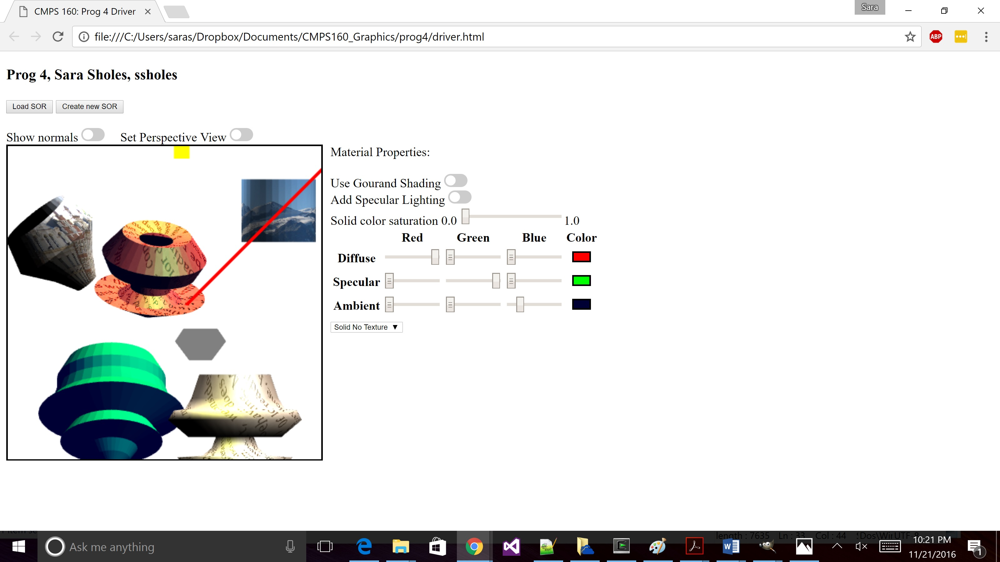

Name: Sara Sholes
Login ID: ssholes
Prog Details: Previous functionality, + user can also apply texture from a drop down menu of tetures- the default is 'text'. BONUS FUNCTIONALITY: The material properties and shading options of each individual object can be changed. See bottom of list of features for more details.
Date: Due Nov 22, 2016
High Level Description (what was implemented, what was not, any special features - Last Point):
- A 401x401 white canvas is rendered
- User has option to load a file (via "Load SOR" button, selecting the obj file, then pressing 'Extract SOR') or create a new SOR (via "Create new SOR" button) by drawing a polyline. If user chooses to draw a new Sor they will be prompted to enter a name for the new SOR which will be automatically saved.
- When SOR is displayed, shows first light as a red line from (500, 500, 500) to (0, 0, 0) which shines white light from the (500, 500, 500) direction. By clicking the on the line representing the red light, the user can turn the light on and off - the line representing the line will be gray when turned off. By default, first light is turned on.
- Shows second light as a yellow cube centered at (0, 500, 0) that is 50 units on each side, which shines yellow (1, 1, 0) light as a point source. By clicking on the cube, the user can turn the light on and off - the cube representing the line will be gray when turned off. By default, second light is turned on.
- When an SOR is being displayed, there are global toggle switches which allow user to toggle between: diplaying/not displaying normals, showing in orthogoal/perspective view
- When specular lighting is on, a slide bar allows the user to adjust the shinyness factor between 1 and 20, where 1 is the default
- The user can select an object in the scene by left clicking on it. A selected object will be shown in gray. If the user right clicks on the background or selects a different object, the originally selected object is deselected. When an object is originally created or loaded, it will be selected.
- By left clicking and holding down the mouse on a selected object, the user can translate the object in x and y directions. When the user releases the mouse, the object will be re-rendered over by the delta x and delta y between clicking and releasing.
- By middle clicking and holding down the mouse on a selected object, the user can translate the object in z directions. When the user releases the mouse, the object will be translated and re-rendered over by the delta y between clicking and releasing.
- By right clicking and holding down the mouse on a selected object, the user can rotate the object about z or x axes. Movement that is more horizontal will rotate the object about the z-axis, while movement that is more vertical will rotate the object about the x-axis.
- By scrolling up, the user can scale up the selected object (up to x2.0), and by scrolling down, the user can scale down the selected object (down to x0.5).
- By left clicking and holding down the mouse on the background, the user can translate the camera in x and y directions. When the user releases the mouse, the scene will be re-rendered with the camera translated over by the delta x and delta y between clicking and releasing. Note that objects/lights/world will appear to move in oppostie direction of the mouse movement since the camera is moving.
- By scrolling while no object is selected, the user can zoom in or out, which means changing the FOV of the camera. The change will only be observable in the persective view.
- By middle clicking on the background, then scrolling while no object is selected, the user translate the camera's position in the z direction. The effect should look similar to zooming, except that by changing the camera position specular lighting will also change.
- By double clicking on an object, the camera will 'look around' from inside that object- aka the camera will be positioned in the center of the object, and the will pan the direction the camera is looking around in the y-direction (in the world's coordinate system, not the object's). The selected object will NOT be shown in gray while the 'look around' is occuring. Once finished, the camera will return to it's previous condition and selected object will be shown in gray. This will look very similar to 'examine' in orthographic view, but the diference is noticeable in perspective view.
- By left clicking on the background while an object is selected, the camera will 'examine' the selected object- the camera will make will circle around the object in the xy plane (in the world's coordinate system, not the object's) with a radius of 500 units while looking toward the object (other objects/lights in scenes will also be shown). The selected object will NOT be shown in gray while the 'examine' is occuring. Once finished, the camera will return to it's previous condition and selected object will be shown in gray.
- By default, any loaded/ newly drawn object will have the 'text' (picture of textbook) as the default applied texture. Also, when a particular SOR is selected, the user can select 1 of 4 different textures to be applied to the object ("text", "mountains", "cityscape", and "flat no texture")
- BONUS FEATURE: When an SOR selected, there are object specific toggle switches which allow user to toggle between: flat/gourand shading (default: flat), specular lighting on/off (default: off), and also change the glossyness when specular lighting is on.
- BONUS FEATURE: When an SOR is selected, the level of solid color saturation (default: 0) can be changed- this will allow the user to apply 'overlay' material properties (at the default value of 0, the color of the object will be only the colors from the original texture). The diffuse color for a pixel on the object is (texture + colorSaturation*(kDiffuse - [1.0, 1.0, 1.0])). The lighting due to ambient material properties (kAmbient) is also multiplied by the colorSaturation. When an SOR is selected, the R, G, B values of the material properties Kdiffuse, kSpecular, and kAmbient can be changed.
Note: Collection of point coordinates from mouse events is based on Matsuda and Lea's 'ClickedPoints.js' from example 2. WebGL rendering of polyline is based on Matsuda and Lea's HelloTriangle_LINE_LOOP.js example 3. WebGL rendering of the SOR is based on Matsuda and Lea's HelloCube.js. Disabling of right click context menu copied from Piazza post 16. Fixed memory issue with fixes described in Piazza post 55. The files 'cuon-matrix.js', 'webgl-utils.js', 'webgl-debug.js', and 'cuon-utils.js' from Matsuda and Lea's library are directly used. Also used the provided 'ioSOR.js' to load and save obj files. CSS for toggle switch based on http://www.w3schools.com/howto/howto_css_switch.asp. Slider bar based on examples at http://webtutsdepot.com/2010/04/24/html-5-slider-input-tutorial/.
Driver HTML File
Images of Output (in Chrome):
Scene with several texture/material properties/shading options:
